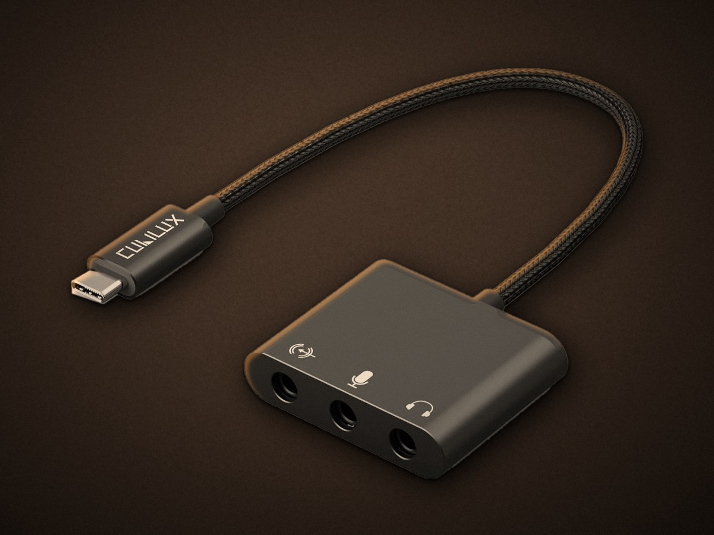

A stereo effects unit for the TrimUI Brick · KNULLI · v1.0
Plug in.
Play.
Echo out.
BrickFX turns the Brick into a stereo effects box. Plug a USB synth or a USB audio interface into the Brick, and any sound can go through it: synths, drum machines, a guitar, a mic on the interface. It comes back out of the jack through five effects in a chain.
Free and open source (GPL-3.0) · Source code on GitHub

SETUP
BrickFX is made for a good sound source, so it takes its input from USB only, not from the Brick's mic.
- 01Connect your sound to the Brick's USB port. A synth with USB audio, like the FM-1, plugs in directly. For anything else, use a USB audio interface.
- 02Run a cable from the Brick's headphone jack into your audio interface, mixer or headphones.
- 03Open BrickFX. The I/O page shows the USB input and its status. Pick a preset and play.
Pages: I/O · CHAIN · DRV · MOD · DLY · REV · EQ · SET. If your synth sounds quiet over USB, turn up Input gain on the I/O page.
THE CHAIN
Five sections, one after the other: DRIVE, MOD, DELAY, REVERB, EQ. In each one you pick one type, or switch it off. Every section has its own page, with a picture of what it does. Change a type or switch a section while you play: no clicks, and the echoes and the reverb tail ring out.
DRIVE
Drive, fuzz or crush. The volume stays about the same as you turn it up.
MOD
Chorus, phaser, tremolo, auto-pan or vibrato, wide in stereo.
DELAY
Digital, tape or analog, up to 2 seconds. Stereo, ping-pong or mono, time in ms or locked to a note value, tap tempo, high and low cut in the repeats.
REVERB
Room, plate or hall, in stereo. Long tails never clip.
EQ
Three bands at the end of the chain: low, mid and high, with the curve drawn on the screen.
OSCILLOSCOPE
Tap SELECT for a full-screen scope: input or output, left and right, or an XY view to see how wide your stereo is. A held note stands still on the screen.
8 PRESETS
Ready-made sounds to start from, from ping-pong with plate to a big ambient wash. Your changes save on their own.
MIDI
MIDI learn for any value, MIDI clock for the delay, program change for the presets.
UNDER THE HOOD
All the audio runs in C, on its own real-time threads. It reads the USB input directly and writes straight to the jack, so the screen can never hold up the sound.
Your USB device and the Brick each have their own clock, and over a few minutes they slowly drift apart. A small resampler keeps them in step, so there are no clicks or drop-outs on long sessions.
From input to output it takes about 6 ms plus the output setting (8, 16 or 32 ms). The I/O page shows the real figure.
DOWNLOAD AND INSTALL
BrickFX_v1.0.0.zip · Free, GPL-3.0. The zip has the full source inside. Want to read the code first? See the source on GitHub.
First, your Brick needs KNULLI, a free system you put on the SD card. Get it and its install guide at knulli.org.
- 01Download the zip and unzip it on your computer.
- 02Copy BrickFX.sh, the .keys files and the brickfx folder to roms/ports on the SD card.
- 03Connect your USB device and the jack, then start BrickFX from Ports. The first time it unpacks a few files, which takes a few seconds.
Hold SELECT for the controls, SELECT + START closes the app. If something goes wrong, brickfx/log.txt says why. Tested on KNULLI Scarab.
NEXT UP
- Five effects in a chain, EQ, oscilloscope, presets, MIDI learn and clockv1.0
- Change the order of the sectionsLater
- More types: pitch shifter, reverse delay, shimmer reverb, and a texture section with filter, compressor and cassetteLater
- Mod speed in time with MIDI clockLater
- Scope: hold the picture, and a spectrum viewIdea
FOUND A BUG? HAVE AN IDEA?
Tell me how BrickFX works for you. Every bug report and every idea helps make it better.
Both go to GitHub. No GitHub account? Email me at info@brickworldhub.com. If something goes wrong, the app's log.txt helps me a lot.

NO BRICK YET?
BrickFX runs on the TrimUI Brick, a small handheld console, with KNULLI on its SD card. KNULLI is free: download it and follow the install guide at knulli.org. The app is free: the Brick is the only thing you need to buy.
- 3.2" screen, 1024 × 768
- USB-C for audio interfaces, USB synths and MIDI keyboards
- Headphone jack out
- 3000 mAh battery, 159 g
- White, black, red or purple
Check today's price on AliExpress or Amazon. These are affiliate links: if you buy through them, I get a small commission and you pay the same price. It helps me keep the apps free. As an Amazon Associate I earn from qualifying purchases.

NEED A LINE INPUT?
To record a synth, a drum machine or a mixer into the Brick, you need a USB audio input. A small USB-C adapter like the Cubilux works well: plug it into the Brick, choose USB as the source, then pick the line input (Input 2) in the app.
- USB-C, no drivers, no power supply
- Line in, mic in and headphone out (3.5 mm)
- Tested with BrickSampler, BrickLooper, BrickTape, BrickFX and BrickAmbientFX
Affiliate link: if you buy through it, I get a small commission and you pay the same price. As an Amazon Associate I earn from qualifying purchases.